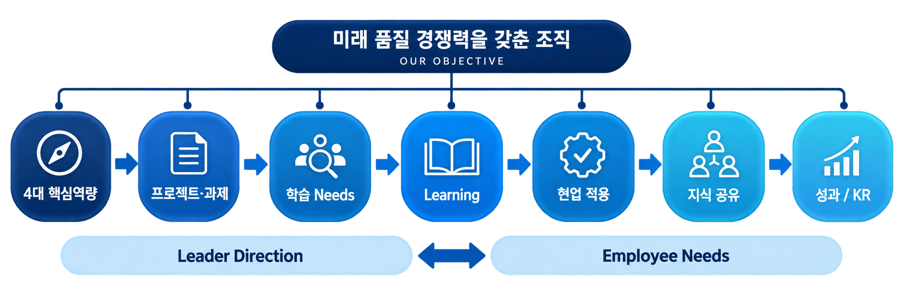

ONE TEAM / ONE CONNECTED LEARNING SYSTEM
개별 교육을 넘어,
하나의 성장 시스템으로.

LEARN필요한 학습을 찾아 실행
직무교육체계 · AI 추천 · Dashboard
SHARE현업의 경험을 조직 지식으로
학습조직 · 내부 전문가 · Q-BRIDGE
PERFORM배움을 실제 업무역량으로
AI 업무과제 · 글로벌 어학역량
ONE TEAM / ONE CONNECTED LEARNING SYSTEM

직무교육체계 · AI 추천 · Dashboard
학습조직 · 내부 전문가 · Q-BRIDGE
AI 업무과제 · 글로벌 어학역량